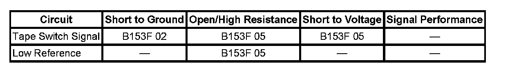

B153F
DTC B153F
DTC DESCRIPTOR
DTC B153F 02
Liftgate Object Sensor Signal Circuit Short to Ground
DTC B153F 05
Liftgate Object Sensor Signal Circuit Short to Battery or Open
DIAGNOSTIC FAULT INFORMATION

Perform the Diagnostic System Check - Vehicle prior to using this diagnostic procedure. Initial Inspection and Diagnostic Overview
CIRCUIT/SYSTEM DESCRIPTION
The power liftgate system uses a secondary object detection method which consists of object sensors fixed to both sides of the liftgate near the seal area. The sensors consist of an internal fixed resistor and normally open switch contacts which when closed will bypass the resistor. The sensor signal circuit is supplied 5 volts through a resistor and monitored within the liftgate control module and during normal power liftgate operation the signal circuit should remain a fixed value. When an object presses one of the sensors the contacts close and the resistor is bypassed causing the signal circuit voltage at the module to go low.
CONDITIONS FOR RUNNING THE DTC
System voltage to the liftgate control module must be 9-16 volts.
CONDITIONS FOR SETTING THE DTC
- The object sensor signal circuit voltage to the liftgate control module is out of range low for 10 minutes.
- The object sensor signal circuit voltage to the liftgate control module is out of range high for 10 minutes.
ACTION TAKEN WHEN THE DTC SETS
Power close function will be disabled.
CONDITIONS FOR CLEARING THE DTC
- The DTC will be current for as long as the fault is present.
- When the fault is no longer present, the DTC will be a history status code.
- A history DTC will clear after 50 ignition cycles or with a scan tool using the clear DTCs function.
CIRCUIT/SYSTEM TESTING
1. Disconnect the liftgate module connector C1.
2. Ignition ON, using a DMM verify that no voltage is present at the object sensor signal circuit terminal 8 in the harness connector.
- If voltage is present, repair the object sensor signal and low reference circuits for a short to voltage.
3. Verify that continuity to ground is not present from the object sensor signal circuit terminal 8 in the harness connector.
- If continuity to ground is present, repair the object sensor signal circuits for a short to ground.
4. Verify that the resistance between the signal circuit terminal 8 and the low reference circuit terminal 16 is approximately 20K ohms.
- If the resistance is not approximately 20K ohms, test the object sensor signal and low reference circuits for an open/high resistance. If the circuits test normal, test and replace the faulted object sensor.
5. If the circuits test normal, replace the liftgate control module.
COMPONENT TESTING
1. Ignition OFF, disconnect the harness connector at the right object sensor.
2. Test for 10K ohms of resistance through the sensor between the signal terminal and the low reference terminal.
- If resistance is not within the specified range, replace the right object sensor.
3. Disconnect the harness connector at the left object sensor.
4. Test for approximately 10K ohms of resistance through the sensor between the signal terminal and the low reference terminal.
- If resistance is not within the specified range, replace the left object sensor.
REPAIR INSTRUCTIONS
Perform the Diagnostic Repair Verification after completing the diagnostic procedure.
- Liftgate Side Upper Sensor Replacement
- Control Module References for liftgate control module replacement, programming and setup. Verification Tests Programming and Relearning